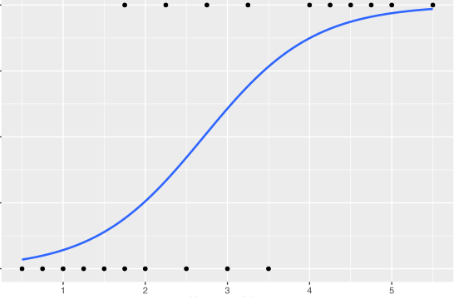

Visualising Classification Models
Learning outcome
- Appreciate the value of data visualisation.
- Appreciate the basic principles of data visualisation.
- Know about different tools and techniques used for data visualisation.
Artefacts
| Activites | Learned R and statistical models |
| Technical work | Created statistical models (Linear regression, Rogistic regression and Dcsion tree) |
Reflections
Left & Right
This week, I tried to code R for statistical models but I struggled because I found it difficult to understand the fundamental of each statistical models. The textbook I was using was too complicated, and I couldn’t grasp the concepts. I ended up turning to YouTube, Statsquest channel, which helped break down statistical concepts in a simpler way. I felt overwhelmed and frustrated at the beginning because I couldn’t understand the statistical models, which made learning R even more challenging. It was discouraging to feel like I was stuck, especially when the book wasn’t making sense. However, discovering resources like Statsquest gave me some relief and motivation because the content was much easier to understand. I also have done the first bit of my assignment.
A positive aspect of this experience I found that start from basic concept and slowly move up to R code was easier for me. On the downside, I felt like I wasted time initially struggling with fixing the code, which slowed down my progress. But it is fine and it is past of learning process. The challenge arose because I was trying to learn two new skills simultaneously: programming in R and understanding statistical models. Going forward, I will continue to use video resources like YouTube and other resources to help solidify my understanding of statistical models and R. I will also try to find beginner-friendly textbooks or online courses that focus on the basics before diving into more advanced content.
Meeting note
No meeting this week.
Professional Skills Matrix
| Competency | Skill | Price | Evidence |
|---|---|---|---|
| Problem Solving | Statistic | Developing | Faced difficulties understanding statistical models |
| Critical Thinking & Analysis | R code | Basic | Solving code |
| Research Skills | Statistic | Developing | Expand the use of other resources such as online courses, documentation, and forums to find solutions |
Action Plan
Use beginner-friendly video tutorials, like Statsquest, to go over statistical concepts and gradually progress to coding them in R.